Published: 2023-11-16
Original link: https://www.cnphotos.net/academy/show-160.html
■ Interviewee | Zhou Xiaoping
■ Reporter | Zhang Yue
■ Editor | Zhou Yimeng
■ Editor-in-chief | Chen Xiaojun
The cnphotos.net "Top Ten Photographers" award selects the best photography work of each year. It encourages and honors excellent photographers who achieve outstanding results in artistic photography. It drives photographers to keep creating. It supports more work that speaks for the new era, shows the struggle of the people, lifts the national spirit, and nurtures noble feeling.
The 2022 (fifth) cnphotos.net Top Ten Photographers award went through several steps. First it showed selected work. Then it invited public voting. It formed a jury of famous photographers, experts, and scholars for the final review, and then published the results. This process chose this year's Top Ten Photographers and the nominees.
We want to dig out and show the classic work and creative path of these photographers. We also want to build a wider space to show work and exchange ideas. So cnphotos.net will send reporters and editors to interview this year's Top Ten Photographers. They will tell the stories behind the work. Later we will publish a collected album of the Top Ten Photographers.
This issue features: an interview with the photographer Zhou Xiaoping.
— Editor's note
Preface
The famous sports photographer Zhou Xiaoping did three main things in his life. He went to the countryside, he carried a gun, and he took photos. He did all three well. He matched whatever role he took. He never wanted to fall behind.
In August 1970, Zhou finished middle school. He was sent to a production team of a people's commune in southern Liaoning. Like other young people of that time, he went up to the mountains and down to the countryside. He lived and farmed in a village, and became an educated youth in the vast rural land.
In the special period of 1974, he accepted his lot. As a "child who could be educated correctly," he caught the last chance to join the army. He spent 34 years in the military. He rose from a common soldier all the way to a senior colonel at division level.
In 2008, Zhou took off his uniform and picked up a camera. He applied the same soldier's spirit to his photography. He has now shot for another 15 years. The famous war photographer Robert Capa said: "If your photos are not good enough, you are not close enough." A sports field is like a battlefield in peacetime. To take great pictures, you must manage the question of distance. Zhou is not a journalist, so he faced many limits in sports photography. Without a valid pass he could not enter the venue. Without good gear he could not get the best shot. Winning awards was even harder. So he kept hope, and carried a fearless belief in life. He tackled hard problems, used tactics, and found new ways that follow the rules of art. He saved countless great moments for Chinese sports photography. Going to the countryside was forced on him. But his photography was his own choice. He had a clear goal, and he gave his all to win and create chances to shoot.
Photography faces all kinds of limits, and so does life. Each time he met a block, he worked nonstop to resolve it and to make a chance. This shows not only the bearing of a soldier. It is also the spirit of sports photography.
Zhang Yue
November 18, 2023
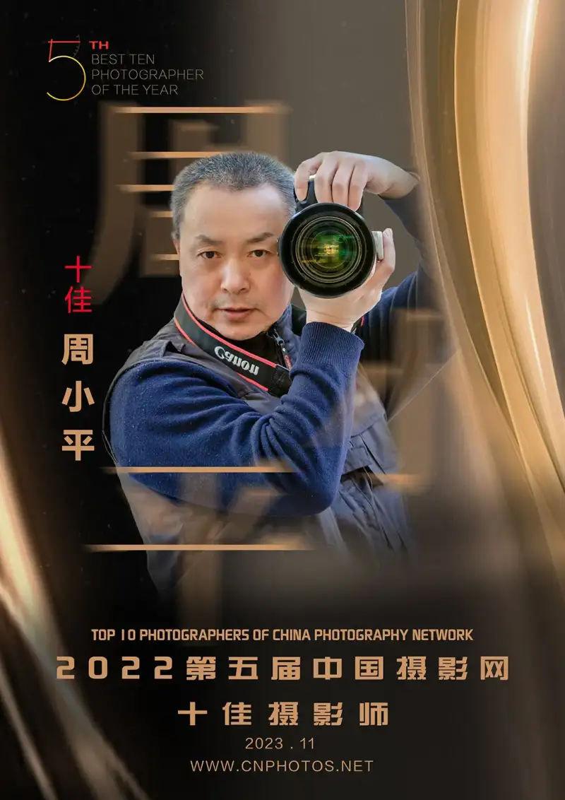
Zhou Xiaoping is a retired officer with the rank of senior colonel. He is a member of the China Photographers Association and the China Sports Photography Society. He is a signed photographer for cnphotos.net. Many of his works have won awards or been published in the media.
The end of my military career let me put more time and energy into the photography I love. Sports photography finally became my favorite. Taking good pictures in highly challenging sports competition is my constant pursuit. My idea of sports photography is this. I must record higher, faster, stronger, and more united. I must also show human warmth, fun, and the beauty of sport. Above all, I must catch the moment that becomes history.
Zhang Yue: Were you always called Zhou Xiaoping? Does the name have a special meaning? If so, what does it mean?
Zhou Xiaoping: I was born into a military family. The name Zhou Xiaoping has no special meaning. My parents never explained it. But as I grew older, I saw that I had indeed lived in a safe, quiet society as a child. I never expected that, as I grew up and especially in my teens, I would face, with no choice, social change like no other before.
Zhang Yue: I read that you were born in 1953. In 1970, after middle school, you went to the Xingshutun People's Commune in Jinxian, Liaoning, to live as an educated youth. What did you do during those five years in the countryside?
Zhou Xiaoping: In August 1970, I finished middle school. I was assigned to a production team of a people's commune in southern Liaoning. Like other young people of that time, I went up to the mountains and down to the countryside to farm. I became an educated youth.
Under the policy of the time, the state paid for the houses at the youth point. The state also provided our grain for the first year. From the second year on, we had to feed ourselves through our own labor. I worked in farming for four full seasons in the village. I did almost every dirty, tiring, and hard job there.
On early spring nights, I stood on a rail car at the commune station. In a stinking place, I shoveled, one scoop after another, night soil mixed with furnace ash that had come from Dalian. On burning summer days, I fought drought relief. I carried water on a shoulder pole, first on one shoulder then the other, back and forth across the fields of the Liaoning hills. In the snowy depth of winter, at the farmland work site where we built a reservoir, I swung a sledgehammer left and right to drive a steel drill into the frozen ground. In the golden autumn, I harvested the corn, peanuts, and apples that I had grown. My sweat went with my smile. In the countryside, I could fully support myself.
In the village, I read by a kerosene lamp. I walked more than ten li to watch the Korean film The Flower Girl. I carried the coffin of a local villager who had died. I also dodged the train fare when I went home to visit. Four years of rural life taught me more and more about China's farmers, villages, and farming. It made me know the real conditions of China.
Hardship and tiredness I slowly got used to. But I had no idea what my future would be. Political pressure weighed on me too heavily. I did complain once. Now I understand more and more the saying that a loss may turn out to be a blessing. Life at the bottom of society is a rare treasure in my life. My time as an educated youth was both a helpless youth and a youth without regret.
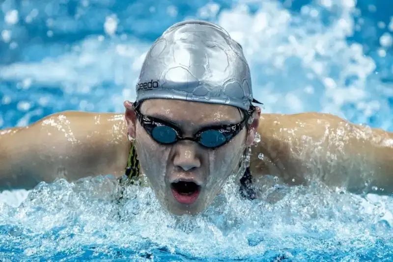
Young Athlete Ye Shiwen
November 3, 2012,
Short Course Swimming World Cup, Beijing.
Zhang Yue: You joined the army in 1974. That was still during the Cultural Revolution. Was it easy for you to enlist as a "child who could be educated correctly"? Where did you serve? What interesting things happened during your service?
Zhou Xiaoping: For educated youth in the village, there were three ways out: factory work, school, or the army. None of them worked for me. My father had been overthrown in 1967. The label of "child who could be educated correctly" made every step hard. My luck was that, when I went to the village, the people around me did not know my family background. I kept a low profile and worked quietly. I could not, and dared not, reach for good chances like factory work, school, or the army. The political background check was a deadly gate for me. On top of that, once people learned my family background, my life in the village would get even worse.
In 1974, my fourth year in the village, I worked up the courage to challenge my fate. I made up my mind to join the army. Instead I hit a hard wall. The political check still failed. I had lost all hope and was ready to accept my fate. Then one person appeared and changed my life.
An old officer who had been overthrown for many years was now restored. Before taking his new post, he made a special trip to the countryside. He wanted to visit the people's communes and see the children who had been sent down because of their parents' downfall. When he drove to my youth point and learned my situation, he said three things. Do not worry. Prepare well. I will find a way.
For me, a turning point and a chance that I could not have asked for had come.
With this senior man's help, I passed the recheck of my political background. After four years and four months in the village, at the age of 21, I finally caught the last train to join the army.
At the end of December 1974, I and 80 other rural young people from the communes of Jinxian, Liaoning, arrived at a valley in Sichuan. It was the base of a unit under the General Staff Department. The unit did military research and was full of intellectuals. I worked in logistics support. After four years as a soldier, I became an officer. I served until I retired at 55 as a division-level senior colonel.
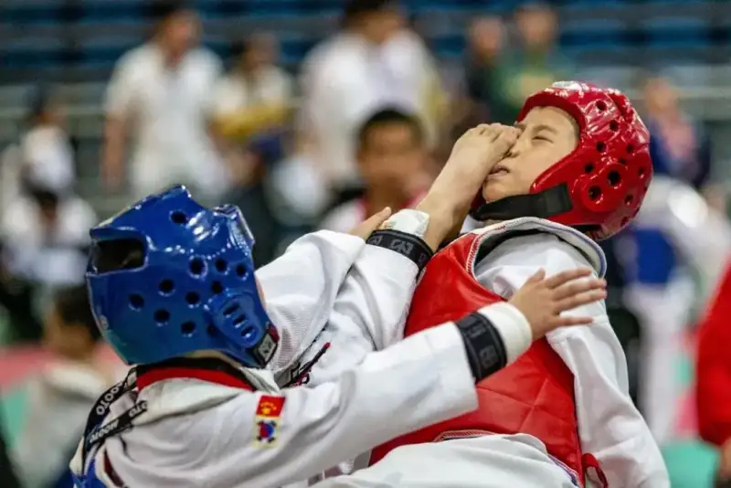
A Hit on Target
April 26, 2014,
Beijing Traditional Event Youth Taekwondo Competition.
Zhang Yue: When did you fall in love with photography? Why? Was there a special reason?
Zhou Xiaoping: In 1984 to 1985, I studied at a military academy. One day I went to the library to look up material, and photography magazines caught my eye. Fine cameras and beautiful photos made me linger. Near graduation, I got to handle a camera that a classmate had borrowed from the school office. I could not put it down. It felt great.
After I graduated, in 1987 I worked as a clerk in the unit's propaganda section. That was when I began my bond with photography.
The first camera in my unit was bought only because I pushed hard and argued for it. This was after the million-troop reduction. The newly formed unit had just moved from a valley into Beijing. Everything needed rebuilding and money. I asked my superiors. The political department told me to ask the logistics department. The logistics department said the cost should come from the political department's budget. The leaders passed the ball back and forth, and I did not know what to do.
At that time, I needed a camera too badly, for work and for myself. With no other choice, I boldly went over people's heads to the unit commander. I said our unit cannot be without a camera. We can buy a mid-range model, just put in a budget. In the end, on the commander's order, I used special funds controlled by the commander to buy a Nikon FG-20 camera and a Nikon standard lens with an F1.4 aperture. It cost 3,600 yuan.
With the political department's approval, I also took a course at the PLA Photography Correspondence School in Beijing. Every Sunday I attended a half-day tutorial. The school sent textbooks. I handed in my work on time. At the end I submitted a few pictures for the exam. I finished after one year. The political department reimbursed 200 yuan of my tuition.
After a year in the propaganda section, I left the office and went to a grassroots unit to lead soldiers. I took my interest in photography with me. Work was busy and I had fewer chances to shoot. Still, I learned a lot from photography newspapers and magazines. For many years I paid my own subscription to China Photography News, Photography World, Popular Photography, and other journals. I gained a great deal.
Later, as a colonel, I spent two more years as director of the unit club. On my request, the club bought a Canon EOS-5 camera, two Canon lenses (70-200 and 16-35), and a Canon flash. When the unit held cultural and sports events, I was the main photographer. My interest and my work came together again. Still, the leaders did not fully approve of my love of photography. Their unspoken message was that young people should do the shooting.
I moved from just taking pictures to real photography later on. I studied and exchanged ideas on photography websites, and entered small contests. That kept deepening my understanding and improving my skill.
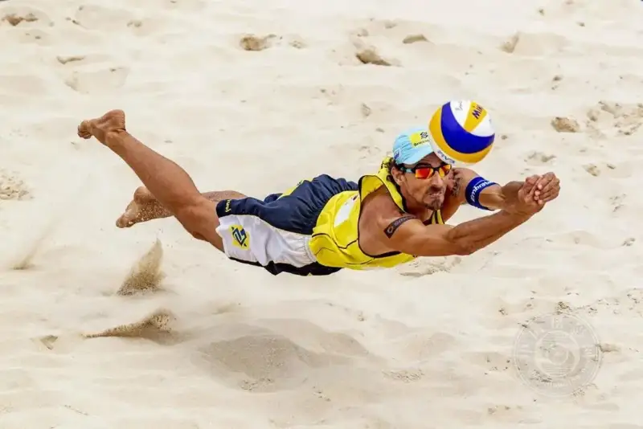
Diving Save
May 13, 2012,
FIVB Beach Volleyball World Tour Beijing Grand Slam, held at Chaoyang Park.
Zhang Yue: In my mind, sports photography seems to be done only by professional press photographers. For many reasons, few ordinary fans get into it. Why are you so devoted to sports photography? What is your main goal in shooting sports?
Zhou Xiaoping: I loved sports from childhood and kept the habit of exercise. In primary school, I was captain of the school soccer team. I played in inter-school matches often. As a right forward, I was the sharp blade who broke through and scored.
Sport has a unique effect on physical fitness, skill, teamwork, and the will to stay humble in victory and calm in defeat. I agree with President Xi Jinping: when sport is strong, China is strong. Sport is war in peacetime. The nature of competition reflects the history of humankind's struggle with nature. Sports contests have much in common with military training and war. I retired from the army at 55. Sports photography is an extension of my military work, a continuation and a development.
Sports photography is a unique and compelling way to express the world. It records and witnesses humankind's higher, faster, stronger. Its best work is a necessary carrier of human culture and history. The creative freezing of a true, moving moment is the soul of sports photography. One trait of sports photography is that it is highly specialized. You must catch the fleeting, changing great moments of a match and record the most important information. This takes constant learning and accumulated experience. Exploring the secret and true meaning of sports photography is my pursuit. Interest is the best teacher. The choice you make matters more than effort. What suits you is the best.
During the 2008 Beijing Olympics, I bought tickets and shot a few matches, including women's basketball, taekwondo, and track cycling. I did not know sports photography then, and my seat in the stands limited what I could do. But the inner and outer meaning of the sports events drew me strongly. The urge to join in, to record, and to express was unstoppable.
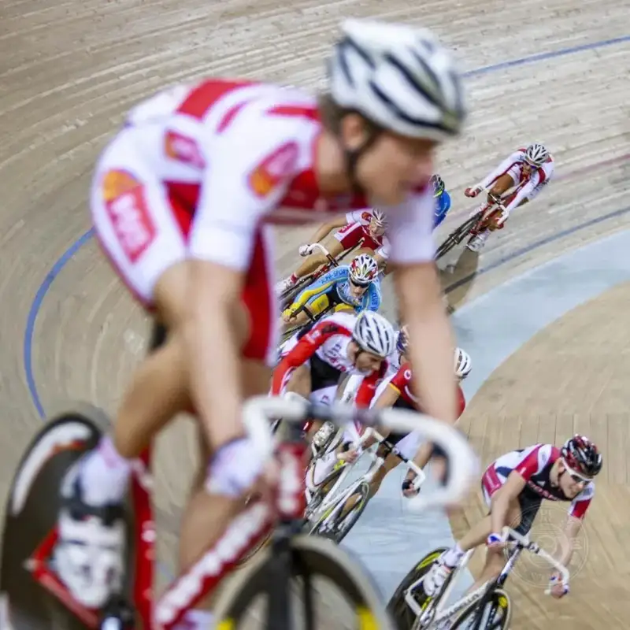
The Journey
January 18, 2009,
UCI Track Cycling World Cup, Beijing.
After the Beijing Olympics, a sports editor at the Jiayou Online photography site invited me to a sports press forum. Canon and Xinhua News Agency held the forum at Xinhua. I was one of three amateur photographers invited to sit in. At the forum, accredited press photographers from the Beijing Olympics shared their experience with Canon cameras and lenses. They showed shooting techniques and talked about stories from the Games. The room was lively. The other two amateurs from Jiayou Online left early. I stayed, rapt, until the end. Sports photography had stolen my heart.
I once joined an online exhibition on the China Photographers Association site. The people from the association singled out my sports pictures. That told me my sports work could stand out. It could and should become my long-term focus and main direction.
You must choose what to do and what not to do. Little by little, I stopped shooting every subject. I focused my energy like a concentrated strike. I put my time, energy, and money into sports photography. Dedicated sports shooting became my normal way of work.
In retirement I want joy in old age, and I want to stay useful. Photography, especially sports photography, gives me deep pleasure. The process and the results of overcoming difficulty and winning give me a strong sense of gain. Photography shows my value and reaches the goal I pursued. It proves that a former educated youth and retired soldier can cross over into photography and make it work.
Zhang Yue: I have seen many of your works. Your sports photography covers many events. Can you just buy a ticket and walk in to shoot these events? Can you get to the photographers' positions reserved for press? Are there events you wanted to shoot but could not enter, or could not capture?
Zhou Xiaoping: For an amateur shooting sports, entering the venue is a gate. It troubled me for years. In fact, I never fully solved the problem of the press pass to get inside.
I am not a member of the press. I am a retired amateur photographer. It is a fact that I cannot legally get a press pass. I longed for events like the national soccer club league and the national CBA men's league. I could only dream of them and could not go. Most things did not go my way. I studied the careers of famous reporters of the older generation. When our country had low standing in the world, Chinese reporters faced many limits abroad at major events. But they were bold and careful. Even if it broke the rules, they found every way to capture great moments and precious pictures. Some famous foreign sports photographers did the same. Their stories taught me. There is nothing you cannot do, only nothing you cannot imagine.
I learned that the work and life experience I gained in the countryside and the army also applies to photography. In the army I was taught that you earn your standing by what you do. In photography, your work is the hard currency. Only by making excellent work, winning public recognition, getting it spread, and letting it act as a cultural product, can you win awards and earn the title of photographer. Then you can get a press pass and the right to enter venues to shoot events. I also live by the sayings that there is always a way when there is a will, and that you choose what to do and what not to do.
I sum it up in three lines. Be bold. Be quick-witted. Dare to try and fail. Do not fear setbacks, dead ends, or detours. Do not fear losing face. I agree with Ma Yun when he said: why should society give you chances? You create your own chances. As a photographer, no one cares why you missed a shot or took a bad one. Getting the picture I want is my goal. If there is no door, there is still a window. As long as I do not break the law, I give my all to find a way into the venue. To get the shot, I sometimes could not avoid bending the rules. Through constant practice and many mistakes, I gradually found a way that works for me. I communicate and build relations to trade for a press pass. I find every way to enter and shoot. I submit work, enter contests, and win awards to keep earning the right to shoot.
In the first stage, I got into venues mostly by bluffing, blending in, and forcing my way through.
On November 30, 2008, the 2008 Short Track Speed Skating World Cup, Beijing, was held at the Capital Gymnasium. I bought a ticket from a scalper. At the gate I was stopped. A volunteer said my professional camera gear was against the rules and would not let me in. With no other choice, I put on a reader card from China Photography News. Carrying a Canon 1D Mark III and a Canon EF300mm F2.8L IS big lens, I slipped in through the media entrance. In the media photo zone set aside for reporters from many countries, I caught several pictures I was happy with. One of them, Wang Meng Defends Her Title, later won an award.
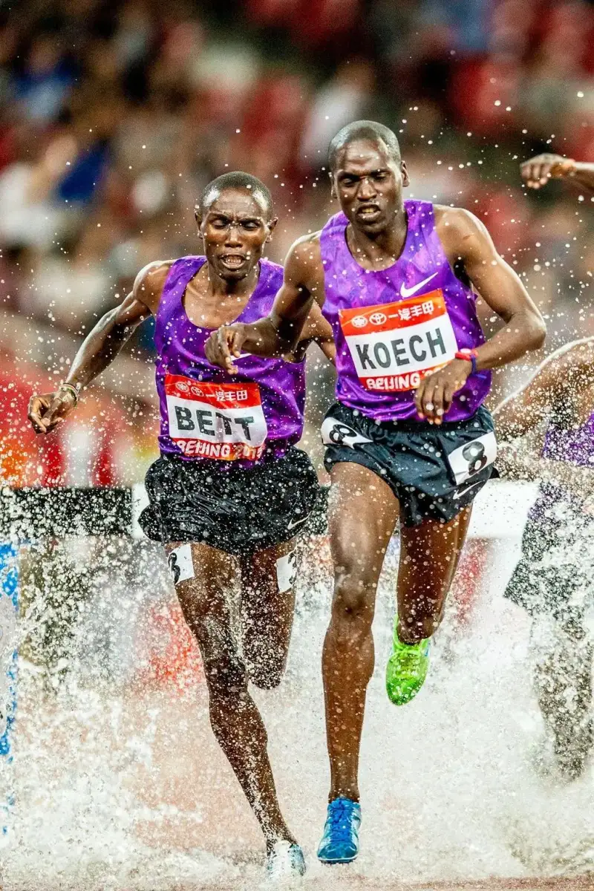
Riding the Wind and Waves
May 20, 2015,
2015 International Athletics Challenge, held at the National Stadium, Beijing.
On September 23, 2014, I read online that the famous Chinese tennis player Li Na would retire. The press conference was at 1 p.m. that very day. Without hesitation, I left at once for the National Tennis Center. At 11:30, I arrived to find many reporters running around in panic because they could not get into the conference. Some reporters from Hubei, Li Na's home province, were even in tears. The conference had a limit on numbers. Reporters without a prior reservation could not enter. I asked several staff but no one could help. I was almost ready to give up. I thought I would find a restroom first, then look around, and leave if I really could not get in. I walked into the Diamond Court of the China Open. I saw a guard at the elevator on the first floor. I took out last year's China Open media pass that I had kept, and got into the elevator smoothly. The press conference was in a meeting room on the first basement floor. By accident, looking for a toilet solved my big problem. Hard work pays off. I finally shot Li Na's retirement press conference.
In the second stage, as I shot at many venues and moved in and out, people recognized my face. I got to know more people inside the circle. My chance of getting in went up.
On September 24, 2011, a photographer friend got a work ticket that let me shoot from the stands. He asked me to the Ditan Gymnasium for a dancesport match. I arrived half an hour early. I noticed people with press passes coming in and out. I wondered if I could get a work pass, which would let me move more freely than a work ticket. When you have an idea, you try it. I found a match official, talked it through, and actually got a press pass.
On October 7, 2010, I set my sights on a Li Na match. By my read, her form was poor. I feared she would lose in the first round. If so, I would have almost no chance to shoot her in Beijing that year. I made up my mind to get this match. After careful thought and preparation, I pushed hard and persuaded the volunteers who managed the China Open site. I borrowed the red vest that marks a press photographer. From the photographers' trench, I shot Asian Number One, which later won an award.
In the third stage, as I won awards and published work, I used my title of photographer and my award pictures as a door opener. I reached out, built relations, and promoted myself boldly. It worked to some degree.
I used certificates from the China Sports Memory: 100 Outstanding Chinese Sports Photographers award to persuade China Open officials. I won China Open press passes for two years running.
I also used my profile as a Star Photographer of the People's Photography Daily to build relations with officials of the Chinese Table Tennis Association. I got a press pass for the finals of a national table tennis club league season.
For the 2015 Beijing World Athletics Championships, I made a deal with a Chinese sports equipment sponsor at an earlier domestic meet. They wanted the pictures I had shot. I used that to propose more cooperation at the Beijing Worlds. I would shoot images for them, and they would get me a press pass. In the end they only got me a work pass. It let me ride Beijing subway and buses free during the Worlds, enter the Bird's Nest stands, and eat free work meals.
For the 2013 Liaoning National Games, after I was named among the 100 Outstanding Chinese Sports Photographers, I met the editors of China Sports Daily. They gave me, a sports photography amateur, a lot of guidance and help.
At my request, with the editors' help, I worked as a special reporter. Over 10 days, I shot events across several sports at the Shenyang and Dalian venues of the National Games.
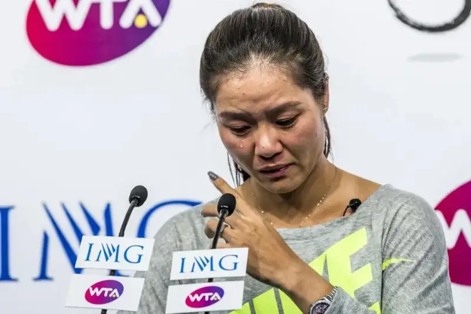
Li Na Retires
September 21, 2014, National Tennis Center, Beijing.
Li Na announces her retirement at a press conference.
Zhang Yue: I heard that after you retired, you shot sports matches in nearly every stadium in Beijing. Have you shot any large events, such as the Olympics, the Asian Games, the National Games, or the Universiade? Any special experiences?
Zhou Xiaoping: Non-press people have no right to shoot large international events such as the Olympics, Asian Games, or Universiade.
I was lucky to shoot the 12th National Games in Liaoning. At the 2015 Beijing World Athletics Championships, I used the work pass of a sponsor's staff member. I could only shoot from the stands, far from the positions of accredited reporters from other countries.
Over the years I have shot swimming, diving, artistic swimming, and water polo at the Water Cube in Beijing. I have shot international ice hockey at the Shougang Ice Rink. I have shot the China Open at the National Tennis Center. I have shot international and domestic track and field at the Bird's Nest. I have shot the national women's table tennis club league and national women's basketball club league at the Shougang Sports Center. I have also shot many youth sports events in Beijing.
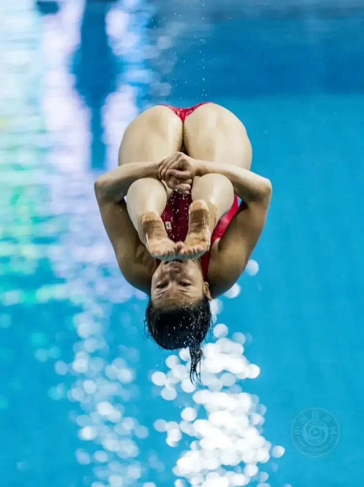
The Takeoff
March 12, 2016, FINA Diving World Series, Beijing.
Chinese diver He Zi wins silver in the 3-meter springboard.
Before Beijing hosted the 2015 World Athletics Championships, it held the International Athletics Challenge for three years as preparation. At the 2013 challenge, I got a press pass for a text reporter. I could only shoot from the media stands and the spectator seats. I ran up and down to several spots, but none was good enough. To get a shot I liked, when the staff were not looking, I climbed over the rail between the stands and the field, into the high jump area where the contest was on. Then I moved fast to the best spot and kept firing. Looking at the camera screen, several great images excited me, including the Russian Olympic and world high jump champion clearing the bar. Suddenly a voice came: get back outside now, your pass does not allow this spot. Caught up in my success, I was eventually escorted out by the staff.
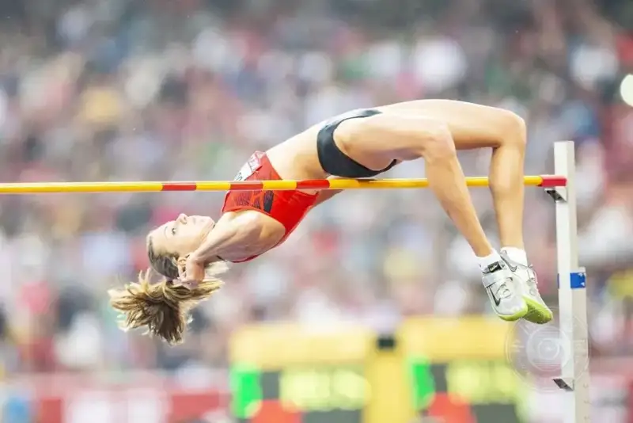
New Height
May 21, 2013, International Athletics Challenge, Beijing.
Russian athlete Anna Chicherova, Olympic and world champion,
clears the bar.
My experience is to focus on the heats. One year the swimming World Cup in Beijing was moved to the Olympic Sports Center swimming pool because the Water Cube was under repair. That pool was built for the Beijing Asian Games and is smaller than the Water Cube.
On the first morning heats, the referees and support staff were not yet at their sharpest. I saw a chance. As breaststroke and butterfly races went on, I and other quick reporters moved behind the referees to catch the athletes from the front. At major international meets, reporters are not allowed behind the referees. So the front-on images of breaststroke and butterfly, which easily make a striking picture, are very hard to get. By the evening finals, with CCTV live broadcast, the venue tightened control. Front shots of breaststroke and butterfly were no longer possible.
In September 2013, I shot track and field at the 12th National Games in Shenyang, Liaoning. Using my special photographer card from China Sports Daily, I picked up a red vest reserved for major domestic media to enter the infield. While I was shooting, a China Sports Daily photographer found me. He said: Teacher Zhou, do not pick up a red vest tomorrow. Our paper can only have one. That was bad. I did not know the rule, but I had indeed taken the place of the host paper. I had to apologize and make it right.
Shooting track and field from the infield offers such unique positions and angles. After asking around, I learned that besides the vests reserved for major media, a few more were given out first-come, first-served. For the rest of the track meets and most other sports at the Games, I lined up an hour before the event and got my red vest.
While shooting from the infield, I saw that photographers from Xinhua and others had placed remote cameras inside the cage for discus and hammer. Without a remote, I still wanted the shot. I slid my camera and wide lens under the protection net, flat on the ground, and lay prone to shoot. It worked well. The referee stopped me for safety.
At the World Cup diving at the Water Cube almost every year, during training and heats, I would go to the spot behind the 3-meter springboard barrier. Standing on a chair, I could shoot the diver against the blue water, like a high dive from the catwalk. The angle was unique and the visual was great. It was a hard-won good spot. During one heat, I shot happily there for a long while. A staff member came over: leave this spot now, you are all over the TV camera. Without a word, I left fast. I could have foreseen it. The spot was just too good, and I risked bending the rule.
I want to innovate and stand apart. But in sports photography, shooters have tried every trick, and true innovation is hard. So I think a lot about recording and showing a moment from several angles.
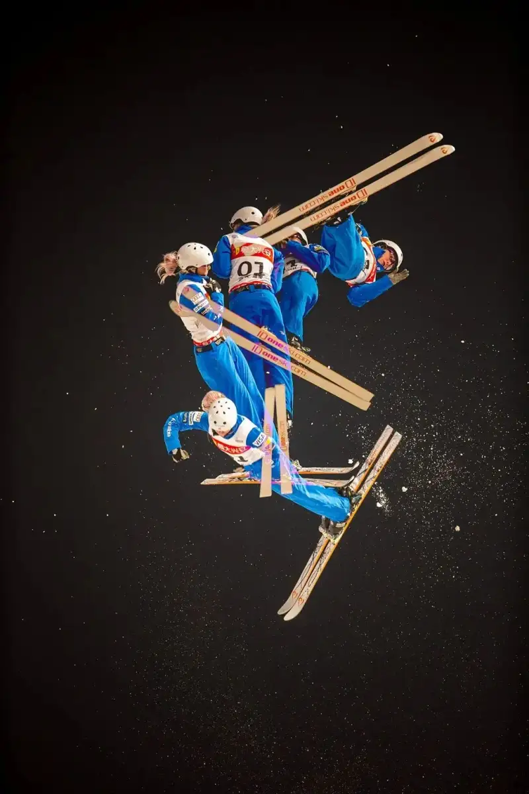
Aerial Technique
December 19, 2015,
Beijing, FIS Freestyle Skiing Aerials World Cup. Multiple exposure.
Once, shooting a youth taekwondo event, I made my usual habit of studying the venue before shooting. I saw a steel stair in a corner that ran straight up to the roof. Shooting from the catwalk above has always been something I wanted. In practice, almost no gym lets a photographer up on the catwalk. Safety cannot be ignored, and no one wants the blame if something goes wrong.
I saw no staff near the stairs. I strapped on my camera and my 400mm f/2.8 big lens, and climbed the steep 60 to 70 degree stairs in one go, up to the roof 20 meters above the floor. I endured the dusty air and the heat near 40 degrees, which left me soaked. The weight of the Canon big lens also tested me as I shot down. I shot for about 30 minutes up there. I fulfilled my wish to shoot from the catwalk. I came away with dozens of pictures with clean, simple backgrounds. The effort was worth it.
After shooting swimming and diving many times, I wanted to capture the athletes underwater. After asking around, at one meet I finally found, with great effort, an underwater photo window or observation port at the Water Cube pool. The area around was dirty. I stood on water seeping from the pool. I could not hear the starting gun, so I was shooting almost blind. The window glass was thick, and JPG colors were off. I shot RAW plus JPEG together, and later adjusted the RAW files on software to get the color right. A friend called to tell me the race was over. Otherwise I would still have waited. Poor communication is another problem you must solve when shooting underwater.
Before each event, I make a plan. I first read my old shooting notes, then look up relevant information.
From May 7 to 13, 2012, the FIVB Beach Volleyball World Tour Beijing Grand Slam was held at Chaoyang Park. I looked online at great volleyball and beach volleyball images and award winners. I found that the diving saves stood out most. I had no such pictures. So I focused this shoot on catching diving saves. With a clear focus, I finished my plan and got the shots I wanted.
I often go online to study great sports photography. At the end of 2013, Xinhua's annual sports photos caught my eye. I recognized an image called The Fencing Bout from the National Games. I quickly checked my own shots of the National Games fencing finals in Shenyang. I did have a similar frame. When I checked the data, the shooting time was a day apart, and the cameras and lenses were different. Later, my Onslaught was published in the Star Photographers album of People's Photography and in its online edition.
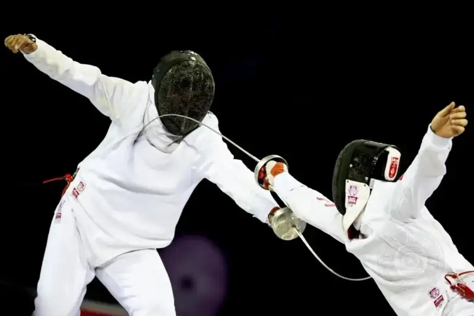
Onslaught
September 7, 2013, Shenyang.
Fencing final at the 12th National Games.
Zhang Yue: I have seen many of your photos of fighting, boxing, and martial arts combat, and countless people praise them online. By official counts, over 800 combat events were held in China in 2018. Your Ring series, shot over eight years, all came from these venues? Do you have a regular base for sports shooting?
Zhou Xiaoping: The series The Ring was chosen from dozens of matches. I had dozens more images on file.
I became the official photographer for several international and domestic combat events, including the 2018 Hangzhou Wushu Sanda World Cup, Beijing Fighting, Hero Soul, Sanda King, and Jingwu Men. I shot dozens of professional fights and boxing matches in Beijing, Shanghai, Jinan, Hangzhou, and other cities. For many of these, the organizer covered food, lodging, and travel, and paid a fee. My busiest year was 2016, when I shot 16 fights.
During the pandemic, I shot the Beijing Fighting series: three events in 2021, four in 2022, and two in 2023.
I often search online for combat events, find the contact person, then use my photographer title and award pictures to build relations and push for a chance to shoot. After repeated dead ends, a chance would always come.
Once I was inside the combat circle, people who respected my work recommended me as a photographer for the events.
Shooting combat events was not always smooth. I faced many surprises and hard problems.
One year I shot a fight at the China Agricultural University gymnasium. Security would not let me lie by the ring to shoot. After two warnings, they roughly forced me and another photographer out of the venue. To make things hard, they would not even let me take my camera bag. The fight director and an official brought me back in. To save their face, I forced myself to shoot for about ten minutes. Then I thanked the director and left, saying my mood was broken and I had lost the drive to shoot.
On December 26, 2015, I won a chance to shoot the Road FC international mixed martial arts event in Shanghai. The Beijing Road company covered food, lodging, and travel. There was no fee, and the pictures I took were shared with the company.
At the Shanghai venue, a young Korean official photographer first wanted to check my camera. When he saw that my professional body and lens were not weaker than his, he demanded that I shoot wide views from the stands during the match, and hand all my pictures to the Korean side afterward. Seeing his aggressive, overbearing manner, I refused on the spot. I would give the pictures only to Road FC Beijing, as agreed.
The Koreans talked among themselves and decided that we photographers from Beijing would not shoot. It turned out the Koreans were the parent company above Road FC Beijing. No one had mentioned this when the deal was made. The Beijing boss was also unhappy. He said fine, we will not shoot, and led us up to the stands.
On the way I thought: I came all the way to Shanghai not to watch, but to shoot. I immediately talked to the Beijing boss. I explained where I could compromise. The goal was to get the fight images. In the end, I, a domestic reporter, and several Korean journalists took part in the shooting. I have to say the fighters and referees were of a high level. Not knowing the full background of the event was a lesson.
For combat and boxing events, the organizer usually assigns both video and still photographers. Sometimes the two groups clash over shooting positions. Videographers from major outlets can be very pushy.
Learning from past experience, before a match starts I talk to the event videographer. I make clear that I am an official still photographer, and I learn his position and route. The goal is to cooperate and give each other room, so we avoid conflict before it starts.
In June 2016, I was the exclusive shooter for a fight at the Beijing Sport University gymnasium. I captured The Winning Blow. Some found it bloody and brutal, but inside the combat circle it is recognized as a strong image.
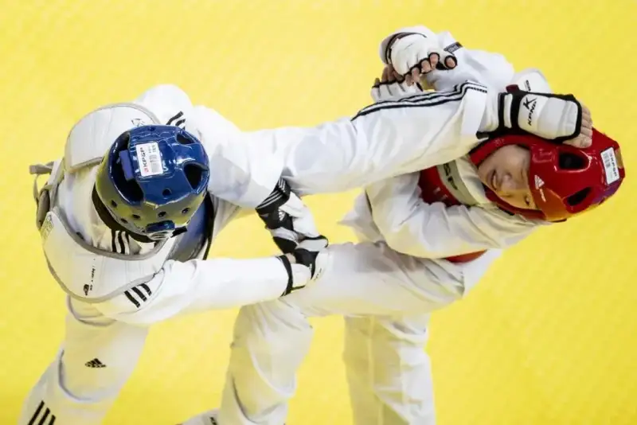
Blow to the Head
July 25, 2018,
Youth taekwondo at the 15th Beijing Games.
Zhang Yue: Besides entering contests, do you show your work in other ways?
Zhou Xiaoping: Mainly I enter contests and publish in print media and photography sites. Sometimes I exchange work on photography websites.
For an amateur, winning awards in sports photography is hard. That is one trait of the field.
For a long time, my sports work rarely won, especially at small events. After repeated failures, I slowly saw why. Many judges like and shoot landscape, documentary, and humanistic work. They do not shoot sports and do not know how it is judged. Later I stopped entering most general contests. I only entered contests with clear categories, or ones where a judge had press experience.
I found that whenever a judge had worked in the press, my sports pictures were more likely to win. Sports photography is basically a branch of photojournalism. Only press photographers can shoot major events like the Olympics. Sports photography is required training for press shooters.
My image The Journey was first rejected at a Beijing contest. Of five judges, only Ju Feng, chair of the Fengtai District Photographers Association and from the August First Film Studio, voted for it. Six months later I entered it again. Besides Ju Feng, Huang Haijing, deputy secretary-general of the Beijing Photographers Amateurs Association, also supported it. The picture finally won.
My image Asian Number One was first shown on a big screen at a website annual contest. It went up and down but did not win. The second time, one of three judges, Guo Jianshe, recognized it, and it won for the first time. The third time, Jiang Zhishun of the PLA Daily and the PLA Picture News gave his approval. It won first prize at the calligraphy, painting, and photography exhibition for retired PLA General Staff cadres. The fourth time, with two other images, it helped me earn the title of China Sports Memory: 100 Outstanding Chinese Sports Photographers.
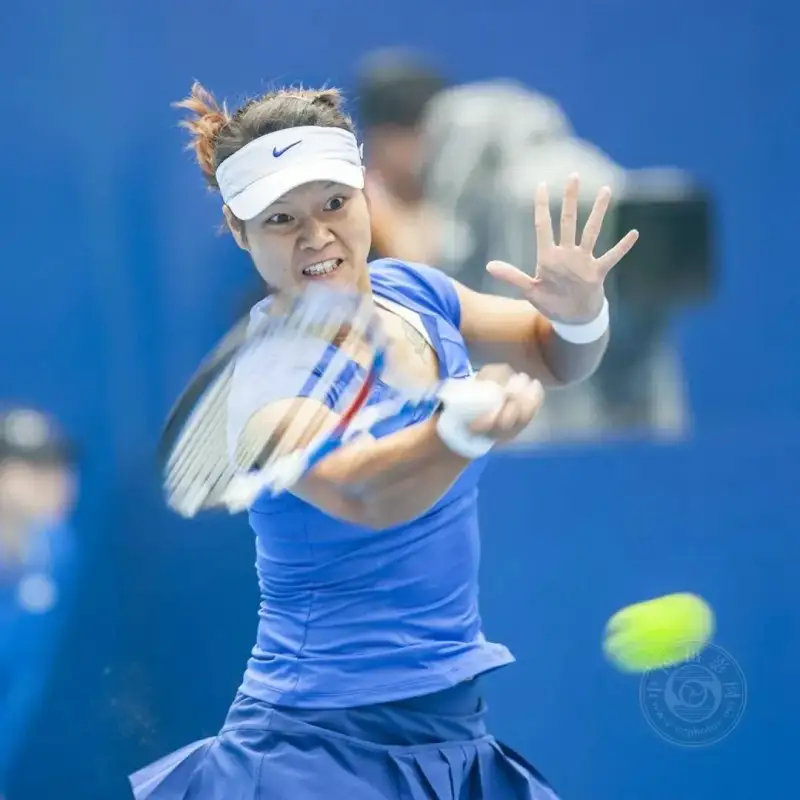
Asian Number One
October 7, 2010, China Open, Beijing.
I have published many works in China Photography News, People's Photography, Chinese Photographer, Chinese Photography, Beijing Culture and History, and on photography sites. In Photography and Camera magazine alone, I published 111 images across 11 features.
Today some photography magazines have changed their style and business model. In the past, you were paid to publish. Now you have to pay to get your images printed. This change does not suit me.
There is a saying in photography circles: do not show me one or two pictures. Show me twenty, and I will know your level. Many of the larger contests and open calls I have entered ask for a set number of images, or a themed series. So when I shoot an event, I focus on the main subject but also on details, close-ups, and sidelines. I shoot with the structure and logic of a series in mind.
Zhang Yue: Do you usually shoot sports alone? Do other photographers go with you? Do you talk much with professional press sports photographers?
Zhou Xiaoping: I am not press. I shoot every event alone, on my own. Whenever I shoot an event, I deal with press photographers. I like to talk with sports shooters. I learn from their experience and ask about the events.
After years in the sports photography circle, I know some press photographers. When I am in trouble, they help.
During the 2015 Beijing World Championships, with only a work pass and no press pass, I could not enter the media area, which had the best positions. To get good shots, I would carry my Canon 400mm f/2.8 lens and wait at the media entrance. When several press workers had their passes checked by volunteers, I walked in fast. The big lens, the work pass, and the people being checked all covered for me.
After I shot a few rounds in the text press area, the staff cleared outsiders again and again. I had to hide in a relatively safe corner, anxiously waiting for the men's 100-meter final. Shooting the sprint showdown was my main task that day. The announcer said the final would soon start. Xu Zhifeng, a photographer I knew from Workers' Daily, saw me and said: stand next to me. I took the chance. I moved quickly to that good spot. The marshals did not move me on. I got what I wanted and captured Bolt's royal return in the sprint showdown.
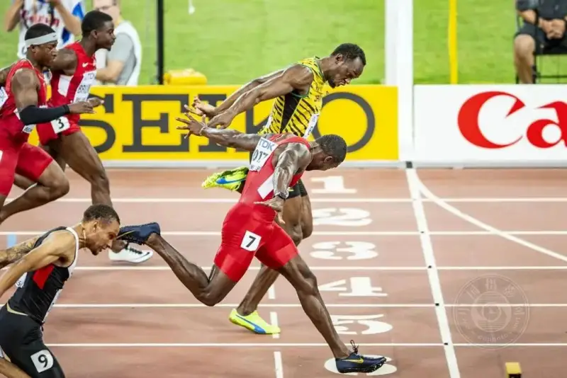
The King Returns
August 23, 2015, World Athletics Championships, Beijing.
Usain Bolt wins the men's 100-meter final.
Not having a press pass made my shooting at the Beijing Worlds very hard. From the stands, pretending to be a reporter with my work pass, I had to ask spectators for understanding again and again. At my wit's end, I sought help from the press coordination officer. It turned out to be Liao Yujie, a Xinhua sports photographer I knew. When I explained my trouble and my need, he understood and agreed to help. On his terms, each day one hour after the evening session began, I went to the media area to collect a red vest from the staff. I could shoot only from the media finish-line stand, and not go onto the outside of the track.
With the red vest that marked me as press, my shooting range widened and my conditions improved a lot. In Dalian, shooting gymnastics at the 12th National Games, I met Jia Guorong, a China News Service reporter then 59. He was shooting from the infield with a Nikon 600mm f/4 lens. I thought he was taking close-ups and details of the gymnasts. After a talk, I confirmed it. Later I saw his work Clash on the Bars, which won first prize in the sports feature category at the World Press Photo, and his essay on it. A black-and-white series of close-ups and details of gymnasts gave me a whole new understanding of how sports photography is expressed. Li Shiying of People's Daily and Jiang Xiaowen of China Youth Daily gave me their sports photography books. Guo Yanmin, chair of the China Sports Photography Society, Xiao Peng of Zhongti Online, and Yu Ning of the CPPCC Daily gave me a lot of help and guidance. I also got work tickets to major international events from several press workers. The editors of People's Photography invited me to Qinyuan, Shanxi, to shoot 3x3 basketball at the National Youth Games. That gave me a chance to shoot sports and to travel.
Zhang Yue: What do you think of camera gear?
Zhou Xiaoping: I care a lot about the gear I use for sports photography. Within my means, I try to buy and use the best tools.
I think a chance to enter and shoot an event is hard-won. I must cherish it and use it fully to get the most out of it. If the gear is awkward and hurts the shot, the loss is not worth the gain. As modern technology advances fast, professional cameras show the level of high technology. The convenience of highly automated cameras and lenses has partly replaced and even surpassed the experience that older photographers built over decades. Professional gear greatly raises the rate of success in catching a sports moment.
A great picture comes from the right time, the right place, the right gear, the right experience, and good luck. You cannot leave out any of them.
Take Wang Meng Defends Her Title, shot on November 30, 2008. I had slipped into the media photo zone at the Short Track Speed Skating World Cup in Beijing. I had studied slow panning technique. My newly bought Canon EF300mm f/2.8L IS professional prime lens was just right. Together with the Canon 1D Mark III that press shooters rely on, I produced an image I was happy with and that could win awards. The big lens is the essential tool of sports photography. My Canon EF400mm f/2.8L IS and my earlier Canon EF300mm f/2.8L IS have done yeoman work. Of my award-winning, published, and personally satisfying images, nearly 80 percent were shot with a big lens. I love my Canon EF135mm f/2L fast lens. In poor light at sports events, this lens shows its full strength. When I shoot fights at the octagon cage, the 135mm prime beats the EF70-200mm f/2.8L IS on blurring the cage net, precise focus, and lower ISO. My award-winning image A Hit on Target was captured with the 135mm prime at a Beijing youth taekwondo event in poor light.
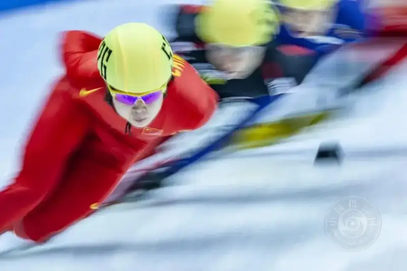
Wang Meng Defends Her Title
November 30, 2008, Short Track Speed Skating World Cup, Beijing.
Zhang Yue: Besides sports, do you follow other subjects?
Zhou Xiaoping: Besides sports, I like documentary subjects such as everyday life of ordinary people. When I joined the China Photographers Association, most of the work I published in China Photography News was humanistic documentary.
Zhang Yue: Is photography your only hobby in retirement? Besides the mental reward, what else has it brought you?
Zhou Xiaoping: Photography is a major part of my retired life. When famous reporters and sports photographers retire at 60 and stop the careers they loved, I, an amateur, walked into the sports photography circle after I retired. Photography, and especially sports photography, has taught me to think as a photographer and to see the world as a photographer. After more than ten years of sports photography, and especially after shooting large events like the National Games and the World Athletics Championships, my life has gained the record and the joy of a sports photographer. It is a rare blessing.
Zhang Yue: To me, your life has been successful and meaningful. Thank you for taking this interview.
Zhang Yue
Reporter for cnphotos.net.
A post-90s woman, Chinese, based in Beijing.
She has published hundreds of thousands of words of cultural criticism and political commentary.
She is now a graduate student in photography and digital media at the Graduate School of the Chinese National Academy of Arts.
She has a special love for documentary photography.